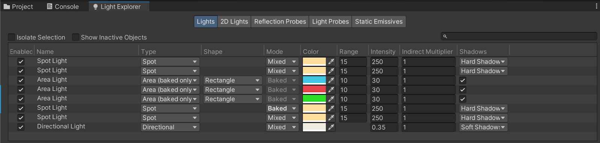
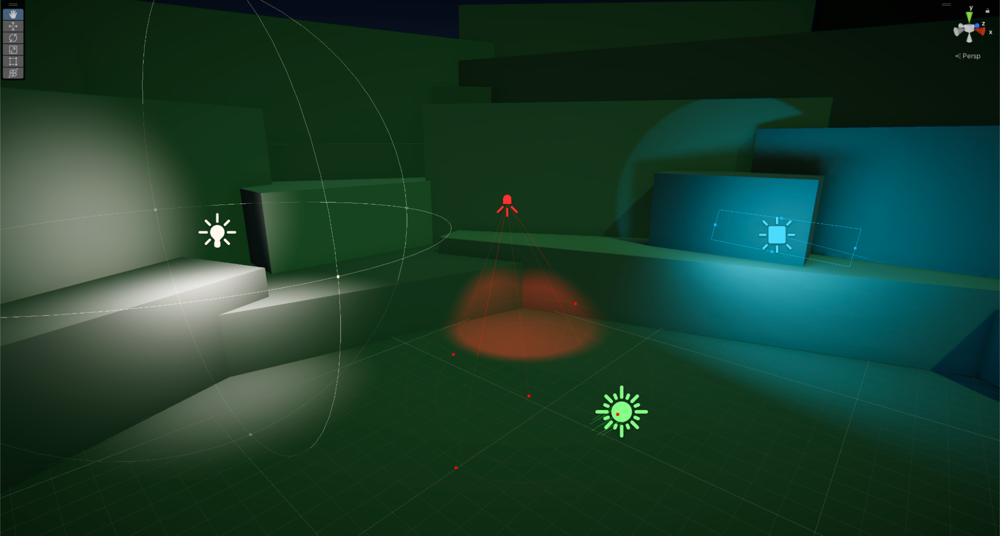
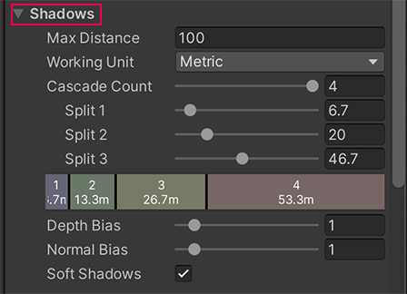

Light the space, keep the surfaces
In Shaders and materials, you held lighting steady to compare surfaces. Here you keep those surfaces steady and change the light. You will make a night-time amphitheater readable, give it a focal point, and explain which controls produced the result.
How was this made?
- Why does one patch of ground brighten when the lamp moves?
- Why can you still see some surfaces away from the lamp?
- How could you make the central area attract attention without making everything brighter?
New conceptDirect light and environmental light
Direct light reaches a surface from a light source. A lamp can illuminate a small patch of paving while a distant sun illuminates a whole amphitheater. Environmental light supplies broader illumination from the surroundings: it can keep shaded steps visible. Light reflected from one surface onto another is indirect light. A surface’s final appearance combines its material response with the illumination it receives.
New conceptDirectional, Point and Spot Lights
A Directional Light represents a very distant source such as the sun: its rays are parallel. A Point Light spreads outward around a location, like a bare bulb. A Spot Light restricts that spread to a cone, like a stage spotlight. Choose the shape that fits the visible source before tuning brightness.
New conceptRealtime and baked lighting
Realtime lighting is evaluated as the scene is drawn, so a moving lamp can move its illumination. Baked lighting stores calculations made earlier; a patch already recorded on the floor does not follow a lamp moved afterward. The supplied final scene lets you compare these approaches without waiting for a new bake. A third mode, Mixed, combines realtime and baked contributions. We will identify it in the supplied example, then use Realtime for our own lamps.
Prior-knowledge recap
You already know shared material references, lit versus unlit surfaces, and Transform tools. Use those ideas here: editing a shared sky material affects all scenes using it, and an unlit test surface will not reveal a light’s diffuse shading. This lab needs no previous project files or C#.
Learning outcomes
By the end of this lecture, you will be able to:
- Predict how moving and rotating different light types changes a scene.
- Coordinate a skybox, directional illumination and environmental fill.
- Control a local light’s shape, reach, intensity and color independently.
- Diagnose a missing realtime shadow and restore the relevant setting.
- Distinguish realtime response from stored baked illumination.
- Use contrast to communicate a lighting intention and explain one revision.
Complete project download/import before class. Allow about 60 minutes for the experiments and quiz checks after a short theory introduction; recording and PDF export can follow class. This is a planning estimate, not a timed student trial. Videos are optional.
Teaching plan
Theory 8–10 minutes before practice. Practical estimate: setup check 4, realtime/baked 7, sky and sun 12, local lights 14, shadows 8, applied revision and quiz review 15 minutes. Full baking, probes, indoor lighting, post-processing authoring and cinematic studies are deferred.
Prepare the project before class
Prepare the official project before class. Use a fresh extracted copy, not the previous materials project. Work outside Play mode unless instructed otherwise. The archive records Editor 6000.3.0b9; use your installed Unity 6.3 version and keep a fresh copy if Unity upgrades it.
Open the official project and protect the source scenes.
- Download CreativeCore_Lighting_U6.3.zip and extract it. In Unity Hub choose Add → Add project from disk and select the extracted folder containing Assets, Packages and ProjectSettings. Open it with the installed Unity 6.3 Editor; let import and shader compilation finish.
- In the Project window open Assets → CreativeCore_Lighting → Scenes → FinalScene_Lighting_Outdoor. In Scene view select a visible amphitheater object and press F to frame it. Enable Scene Lighting in the Scene view toolbar; if the sky is gray, enable Skybox in its Effects menu. Look for the supplied lamps and lit floor.
- Open Window → Rendering → Lighting and Window → Rendering → Light Explorer. Keep these windows available. Create Assets/Lecture13 for your own scene and sky material. Do not clear or regenerate the supplied final scene’s lighting data.
Explanation
The archive is a project, so opening its root preserves its URP rendering configuration and scene assets. Scene Lighting makes Scene view display the scene’s lights; disabling it substitutes an Editor preview. The Lighting window controls scene-wide settings. Light Explorer lists Light components, making it easier to find a light hidden inside a prefab.
Refresher (1)Scene lighting and material response
Use scene lighting on lit materials when judging illumination. Editor preview lighting can conceal a missing or disabled scene light.

Observe when lighting is calculated
Start with an observation in Unity’s completed scene. Keep its lighting data intact and undo each move immediately. Then switch to a separate scene for your own work.
Compare live direct light with stored illumination.
- In FinalScene_Lighting_Outdoor, expand Lighting in the Hierarchy. Select an ordinary StreetLamp root. Inspect its child Light or find it in Light Explorer. The supplied Unity 6.3 prefab uses Mode: Mixed: it combines realtime and baked contributions. Move the whole lamp sideways with W while watching its direct pool of light, then Undo. Judge that moving pool, not every shaded region.
- Select Baked StreetLamp at the highest level. Confirm its light uses Mode: Baked. Predict what will happen, then move the whole lamp sideways. The stored patch and baked shadow should stay behind. Undo immediately. If the patch is absent before moving, stop and reopen an untouched project copy; do not replace the comparison by guessing from the object name.
- Double-click TutorialScene_Lighting_Outdoor from the same Scenes folder so it replaces the final scene; do not open it additively. Use File → Save As to save Assets/Lecture13/LightingStudy.unity. Verify LightingStudy is the only open scene in the Hierarchy. Do not save changes to the completed reference scene.
- In LightingStudy, open Lighting → Scene and click New Lighting Settings to create a separate settings asset; name it LightingStudySettings and keep it in Assets/Lecture13. Disable Baked Global Illumination on these new settings. Do not edit the shared ProtoLightingSettings asset.
- At the bottom of the Lighting window, open the arrow beside Generate Lighting and choose Clear Baked Data. This affects all open scenes, which is why only LightingStudy must be open. This working scene inherits lighting data from the tutorial scene; clearing it prevents old illumination from masking your tests. Save. Do not clear the final reference scene or generate a new bake.
Optional video references
Shows a live direct-light response in the completed reference. The current 6.3 prefab uses Mixed mode; undo after observing. Original tutorial step · Open video. Starts at 2×; change speed in the player.
Shows the stored pool of light remaining in place. Preserve the original scene and its bake. Original tutorial step · Open video. Starts at 2×; change speed in the player.
Explanation
The lamp model and its illumination are different things. A realtime Light responds to its current Transform. A lightmap is a texture containing lighting calculated for fixed surfaces; moving the lamp does not rewrite those stored pixels. Changing a Baked light’s Mode alone does not remove old lightmap data either. That is why this comparison uses the untouched supplied scene.
A realtime light does not imply realtime bounced illumination. This project combines realtime direct lighting with a baked global-illumination workflow. Baking computes indirect contributions in advance; moving objects need a separate way to sample that stored lighting, such as probes. We do not author lightmaps or probes in this lab.
Mixed is a third Light mode. Its balance of realtime and baked contributions depends on the scene’s mixed-lighting mode. The ordinary supplied lamps are Mixed, so the moving pool demonstrates their realtime direct contribution; it does not prove that all their lighting updates. The later working lamps are explicitly Realtime. Removing inherited data and disabling baking on a new settings asset gives that working scene a controlled realtime starting state.
Refresher (1)Realtime and baked lighting
A moving model is not evidence of moving illumination. Compare the floor before and after the move, and read the Light component’s Mode.
Coordinate the sun, sky and fill
Build a quiet night background in LightingStudy before adding lamps. Keep geometry and surface materials unchanged so the effects are attributable to lighting.
Separate light direction from light position.
- Expand Lighting and select Directional Light. Confirm Mode: Realtime. Keep one fixed Scene view and note the original Transform. Move the light with W; inspect a step edge, then Undo.
- Rotate the Directional Light with E so it strikes the amphitheater at a shallow angle. Observe the brighter faces and shadow direction. Choose a cool, slightly blue Color and reduce Intensity until the surrounding structure remains visible without overpowering the future lamps. Record your chosen values in your own scene; no single numerical setting is required.
Optional video references
Shows rotation in a brighter intermediate scene. The separate translation test in 3.1.1 is specified in the written instructions. Original tutorial step · Open video. Starts at 2×; change speed in the player.
The demonstration explores color; the lab uses a restrained cool result. Original tutorial step · Open video. Starts at 2×; change speed in the player.
Explanation
Directional Light position is only the location of its Editor gizmo. Rotation defines the direction of parallel rays, so rotating it changes which faces receive light and where shadows fall. Intensity changes strength; Color changes the light reaching the surface. A white wall can look blue without its material changing. Unlike a nearby lamp, this light has no local range to move around the floor.
Give your working scene its own night sky and ambient fill.
- In Assets/Lecture13 create a Material named NightSky. In its Inspector set Shader → Skybox → Procedural. Open Lighting → Environment, assign NightSky to Skybox Material, and assign your Directional Light to Sun Source.
- Select NightSky. Set Sun: Simple, then adjust Sky Tint, Atmosphere Thickness and Exposure one at a time until the sky suggests dusk or night. Keep enough difference between the amphitheater silhouette and the sky to read the outline. The sun disk and direct lighting should agree in direction.
- In Lighting → Environment → Environment Lighting set Source: Color. Use a dark, desaturated blue Ambient Color for predictable fill. Compare near-black with a slightly brighter color from the same Scene view, then retain the lowest fill that makes unlit sides readable. Keep this Color source for the lab; do not generate a lightmap. Save.
Optional video references
Shows assigning an existing sky material to the Lighting window. Creating the material, adjusting its properties and selecting Color-source fill are explained in the written steps; they are not demonstrated in this short clip. Original tutorial step · Open video. Starts at 2×; change speed in the player.
Explanation
A skybox material draws the distant background. Its Exposure changes the sky’s appearance; it is not the Directional Light’s Intensity. Sun Source links the procedural sky’s disk to the chosen directional light. Because NightSky is a new material asset, you can edit it without modifying the sky material shared by the official scenes.
Environment Lighting supplies diffuse fill. Here Source is Color, so one chosen ambient color supplies that fill independently of the visible sky. This is an intentional simplification: the source tutorial also explores Skybox and Gradient. A dark background alone does not ensure dark surfaces. Raising fill brightens shaded faces too, which can reduce the contrast needed to read local lamps. A realtime Color-source test does not require generating a lightmap.
Refresher (1)Sky and environmental fill
The sky controls the distant appearance; environmental fill controls broad illumination. Coordinate them, but test them separately.
Shape the pools of local light
Add a visible reason for a bright patch. Use a supplied street lamp and keep the sky, ambient color and surface materials unchanged during the local-light comparisons.
Compare a cone of light with an all-direction light.
- From Assets → CreativeCore_Lighting → Prefabs, drag StreetLamp into LightingStudy. Place its base on the lower amphitheater floor near a step edge; use orthographic side views or orbit to ensure it is not floating. Rename the root StudyLamp. Expand it and select its child Spot Light.
- In the child’s Light component choose Mode: Realtime. Disable just the Light component, observe the lost pool of light, then re-enable it. Leave the lamp mesh and all other lights in place.
- Change Type from Spot to Point without moving the object. Compare which nearby surfaces brighten. Restore Spot. Adjust the child’s rotation only if its cone misses the floor; keep the light inside the fixture. The final cone should illuminate a patch beside the step.
Explanation
The prefab supplies both a visible lamp model and a child GameObject with a Light component. The renderer draws the prop; the Light illuminates other surfaces. A luminous-looking bulb is not proof that it lights the ground. A Point Light spreads around its position; a Spot Light illuminates only within its cone, so its rotation matters. Keeping position and intensity unchanged isolates the effect of changing Type.

Tune reach and strength without confusing them.
- Keep StudyLamp selected at the light child. With Gizmos visible, lower Range until the pool no longer reaches the step. Increase it just enough to include the floor and edge you want lit. Keep Indirect Multiplier: 1.
- Hold Range steady. Reduce Intensity to zero and then raise it until the patch is visible without washing out the paving detail. Compare a narrow and a wider Spot Angle (shown as Outer Spot Angle in some layouts); restore an angle that keeps the bright patch localized. Do not compare raw intensity values with another pipeline or light type.
- Choose a warm, pale color for the lamp. Observe the warm floor against the cool ambient surroundings. Duplicate the StudyLamp root once, place the second lamp on another level with its base touching the surface, and tune it so the two lamps do not erase the dark separation between their pools. Save.
Optional video references
Shows only Range changing in an older Editor. Its Inspector displays Baked mode with an Editor preview; keep your working lamp in Realtime as required in 4.1.2. Do not copy the clip’s mode or intensity. Intensity, angle, color and duplication are covered by the written steps. Original tutorial step · Open video. Starts at 2×; change speed in the player.
Explanation
Range is the cutoff distance for a local light. Increasing intensity cannot illuminate a surface outside that reach. Inside the range, intensity changes strength; a nearby surface can still be much brighter than a farther surface. Spot angle changes cone width. For an isolated comparison, change only one of these properties and keep the viewpoint fixed.
Indirect Multiplier scales a light’s indirect contribution where that contribution is calculated; it does not create realtime bounced light by itself in this setup. Leave it at 1. The visible result also depends on material, exposure and pipeline settings, so use paving detail and pool boundaries as evidence instead of copying a brightness number from older footage.
Refresher (1)Local light shape and reach
Type and angle determine the illuminated region; Range limits its reach; Intensity changes its strength. Compare each control with a fixed view.
Make shadows support the scene
A shadow needs a light, an object that blocks it, and a renderer/pipeline configuration that displays it. Make a simple shadow test visible before judging subtle softness.
Create and diagnose one readable realtime shadow.
- Create a 3D Object → Cube named ShadowTest on the lower floor beside StudyLamp. Use a 1-unit scale and position the center 0.5 units above that local floor so the cube rests on it. Keep it within the lamp pool. Leave its default lit material or assign a plain URP/Lit material.
- Select StudyLamp’s light. Set Shadow Type: Hard Shadows. Inspect the cube’s Mesh Renderer → Lighting and confirm Cast Shadows: On. Keep Receive Shadows enabled on the test and receiving floor renderers. If no lamp shadow appears, check that the active URP asset enables additional-light shadows.
- Find the active render pipeline asset in Edit → Project Settings → Quality (the selected quality level’s Render Pipeline Asset). If none is assigned there, use the default pipeline asset in Project Settings → Graphics. The supplied project includes Assets/CreativeCore_Lighting/Settings/Rendering/UniversalRP-HighQuality; verify the assigned asset instead of editing a similarly named unused one. In its Shadows settings, note the current Max Distance. Set it to 0, observe shadows disappear, then restore the original value (the tutorial uses 100). The inspected High Quality asset starts at 36.23; restore the value you actually noted, rather than adopting the video’s value.
- Enable Soft Shadows in that active URP asset. On the Directional Light and StudyLamp light set Shadow Type: Soft Shadows. Compare the cube’s shadow edge at a close view; the difference may be subtle. Finish with visible shadows and the original nonzero Max Distance restored. Save LightingStudy.
Explanation
Unity commonly renders realtime shadows using a shadow map: a depth view from the light, used to decide whether another surface blocks the light. Cast Shadows governs whether a renderer contributes an occluder; Receive Shadows governs whether the surface displays shadowing. The light must request shadows and the active URP settings must support them. A decorative lamp mesh does not turn those switches on automatically.
Max Distance limits how far from the viewing camera realtime shadows are rendered. It is not the light’s Range: the surface can remain illuminated while its shadow disappears. At zero, realtime shadows are excluded. Soft Shadows filters shadow-map edges, but it cannot repair a missing caster or a disabled shadow path. Extra shadow lights and filtering add rendering work; use them where the visible result matters.
Pipeline assets are shared project assets. Saving a separate scene does not isolate their settings. Restore temporary changes before leaving the experiment, and inspect the active quality override before assuming the Graphics default is in use.

Refresher (1)Illumination and shadows
A lit surface is not evidence that shadows are enabled. Test the caster, receiver, light and active pipeline settings separately.
Apply a lighting intention
Use the existing LightingStudy scene to meet a visual brief. Make one intentional revision instead of adding more effects. This is the single recording sequence for the lab.
Make a welcoming route into a quiet night scene.
- Choose a route from the lower floor toward the central space. Keep your two street lamps, cool sky/fill and ShadowTest cube. Arrange the two lamps so the route is easy to notice while the seating remains visibly darker. Keep the geometry and existing material assets unchanged; choose the light settings yourself.
- From one fixed view, explain which region should attract attention and predict one change that will improve it. Make that one change, compare before/after, and retain or undo it using visible evidence. Ensure the route has surface detail rather than featureless white patches and the cube has a grounded shadow.
- Record about 2 minutes with narration: show the complete scene; briefly disable and re-enable one lamp’s Light to identify its contribution; show your one-property revision and explain the difference; demonstrate the cube’s visible shadow. Explain why moving a baked lamp would not update its old floor patch. Do not introduce a new bake for this recording.
- Restore both lamps enabled, intended Spot types, chosen night settings, and a nonzero shadow Max Distance. Save LightingStudy.unity outside Play mode. Keep the Unity project locally; the required uploads are only the recording and quiz PDF.
Explanation
The brief requires a visual priority, not a prescribed set of numbers. A useful revision might widen one cone to reach the next step, reduce fill so the route stands out, or reduce a lamp’s intensity to recover paving detail. Explain the property, the predicted effect and the observed result. If everything is equally bright, adding another light is unlikely to create a clearer focal area.
Diagnose the visible result
Use the visible symptom to select a check, then repeat the observation from the same viewpoint.
| Symptom | Check | Why |
|---|---|---|
| Every light edit seems ineffective | Scene Lighting in Scene view; the selected Light; a lit surface shader | Editor preview lighting and unlit materials can hide the response. |
| The sky changed but the seating did not | Environment Lighting → Source: Color and Ambient Color | This lab deliberately separates ambient fill from the sky. |
| Lamp model remains visible but its floor patch is absent | Child Light enabled, Realtime mode, cone direction and Range | The prop renderer and illumination are separate. |
| Baked patch does not follow a lamp | Light Mode and existing lightmap data | Stored lighting is not recomputed by moving the prop. |
| Surface is lit but its shadow is absent | Caster/receiver settings, light Shadow Type, active URP shadow support and Max Distance | Illumination and shadow visibility have separate controls. |
| Scene is bright but lacks a clear route | Fill level and overlapping pools; compare one change at a time | Broad illumination can erase the contrast used to guide attention. |
Why are Light Probes and Reflection Probes not part of this task?
Light Probes sample lighting for objects that cannot use fixed surface lightmaps. Reflection Probes supply local surroundings for reflections, which connects to the previous material study. They solve different problems from placing realtime lights. This lab establishes that foundation; authoring probes and lightmaps requires a separate practical.
What to submit
Submit two files, using the demonstration sequence in Apply a lighting intention.
- StudentID_L13.mp4 — the approximately 2-minute narrated screen recording.
- StudentID_L13_quiz.pdf — check all eight quizzes, read feedback, retry mistakes, enter your name and student ID below, then choose Export results → Save as PDF.
Keep the Unity project locally. The PDF records checked answers and student-reported progress; the recording supplies evidence of the practical work.
Official sources and scope
Based on the Creative Core Lighting unit, using its Unity 6.3 project. The source videos include older Editor recordings; use the current field labels and visible goals in this sheet rather than copying old intensity values. No English caption track was supplied for these procedural clips.
- Get started with lighting
- Get started with lighting in Unity
- Configure the Directional Light and skybox
- Add light sources to your scene
- Configure shadows in your scene
- Lighting window reference (Unity 6.3)
- Realtime, Mixed and Baked Light modes (Unity 6.3)
- Ambient light (Unity 6.3)
The wider unit also covers lightmap generation, Light Probes, indoor lighting and Reflection Probes. Those topics are not additional submissions for this lab.